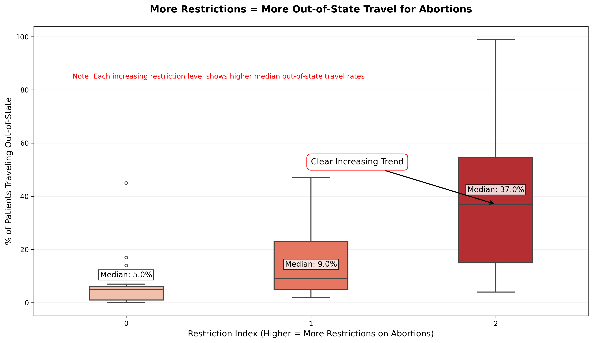
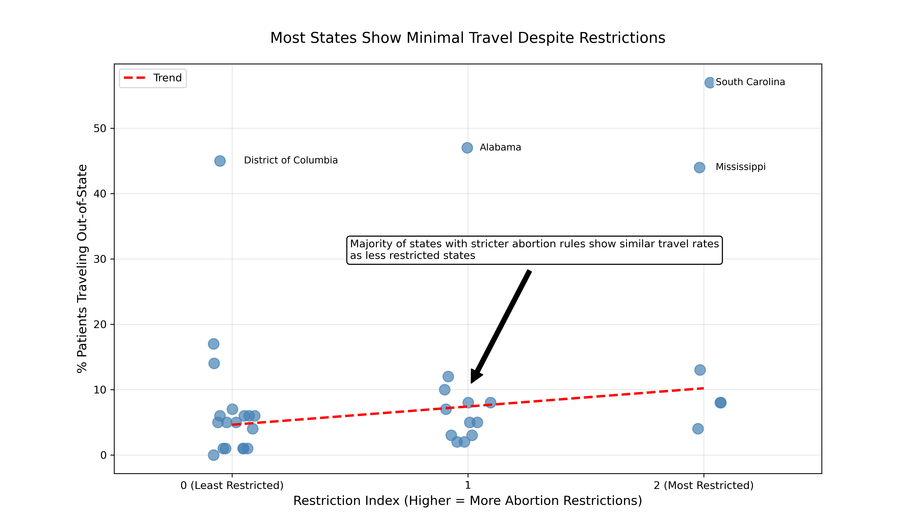

Proposition: "States in the U.S with more abortion restrictions see more people travel out-of-state to receive care"
FOR the Proposition

Design Decisions and Rationale:
- Color Psychology (Score: 1.5 - Mostly Earnest)
- In the box plot, I used a red color gradient from light to dark to show increasing levels of abortion restrictions. I used a different shade of red for each restriction index, with the shade of red getting darker as the restriction index increases.
- Justification: The color progression in the box plots creates an intuitive visual hierarchy for showing abortion restriction levels. The viewer can use the color scheme as another way to understand which box plots are associated with certain abortion restriction levels. I choose red for its association with restrictions/warnings, but doesn't distort the underlying values.
- Alternative Options I Considered: I was also considering other colors, such as a blue palette, or no colors at all. While this could have worked and been more neutral, I think it would be less effective at communicating restriction severity.
- Restriction Index Calculation (Score: 2 - Fully Earnest)
- I created a custom index using both clinic availability (% counties without clinic) and low clinic count that shows how strict a state's laws are on abortion. A lower index means less restrictions while higher index means more restrictions. I created this restriction index to be used as the X axis on the visual for the boxplots, as this would make it simpler to compare different levels of abortion restrictions with out of state travel rates.
- Justification: This simple metric I created from the raw dataset cleanly categorizes states while using fair and reasonable thresholds. The calculation for each state's restriction index is shown in the visual.py code located in my Github repository.
- Alternative Options I Considered: A continuous scale, instead of indexes 0-2, would have shown more distinction. However, since I wanted to use a boxplot it would've made the boxplot comparison less clear, because there'd have to be so many more plots. Due to this, I decided a scale of 0-2 would be appropriate, with 3 box plots in the visual as most effective.
- Trying to Make Outliers Less Apparent (Score: -0.5 - Slightly Deceptive)
- In the box plots, I showed all outlier data points with transparency styling rather than default boxplot outliers styling.
- Justification: While the boxplot is technically showing all data, making outliers transparent makes them slightly less apparent than the boxes/medians. This keeps the viewer's attention on the central trend.
- Alternative Options I Considered: A regular boxplot, which would have made outliers more noticeable and draw attention away from the main trends in the box plots. I also considered a regular scatterplot, but this would have created a lot visual noise because there'd be too many points to show.
AGAINST the Proposition

Design Decisions and Rationale:
- Strategic Data Filtering (Score: -1.5 - Mostly Deceptive)
- Removed mid-range outliers (states having 20% - 40% of residents traveling out of state for abortions) for restriction levels 1-2, while keeping extreme cases (above 40%)
- Justification: This highlights the clustering of most states at lower out of state travel rates while still showing important outliers. The filtering makes the weak correlation between restriction levels and % of patients traveling out of state more visually apparent.
- Alternative Options I Considered: Showing all data points would have revealed more mid-range cases that slightly support the original proposition that more abortion restrictions leads to more out of state travel.
- Trend Line (Score: -1 - Deceptive)
- Used dashed red line to show the weak correlation in the scatterplot, which shows evidence opposing the proposition. The trend line indicates that increasing restriction level doesn't greatly increase the percentage of residents traveling out of state.
- Justification: The styling draws attention to the weak positive trend in the scatterplot. The trend line is included to support that there is a weak correlation. The trend line was plotted excluding extreme outliers, making the slope less steep which shows a weaker correlation between the two factors and offers better evidence opposing the proposition.
- Alternative Options I Considered: An alternative would be to not include this at all, but I believe that adding the trend line communicates the opposing view for the proposition more effectively.
- Choice of Title(Score: 1 - Earnest but Persuasive)
- The visualization's title "Minimal Travel Despite More Abortion Restrictions" directly counters the original claim, which sets the tone for this visual opposing the proposition.
- Justification: The title is accurate based on the visual and challenges the proposition. The "despite" challenges the proposition rather than just presenting results.
- Alternative Options I Considered: I was thinking of neutral titles like "Variation in Travel Rates Across Restriction Levels". However, a title like this would have been less persuasive.
- Annotation with Arrow To Draw Attention to Data Points(Score: 1.5 - Mostly Earnest)
- I added text on the visual stating "Majority of states...show similar travel rates with an arrow pointing to a cluster of states who had medium to higher abortion rates that still had lower percentages of patients traveling out of state."
- Justification: This annotation accurately summarizes the main visual pattern and helps with interpretation. The positioning near the cluster shows support opposing the proposition. It also is mostly earnest because in the raw dataset majority of states are in the lower travel rate (under 20%), except for the cases of outliers, some of which were removed which is why this isn't fully earnest.
- Alternative Options I Considered: When deciding whether or not to include this annotation, I thought removing this guidance would mean more open interpretation, however, I wanted to viewer to take away this visual as opposing the original claim.
Final Reflection
This project taught me how small and subtle design choices can significantly affect the viewer interpreting data while remaining technically accurate. My supporting visualization uses color progression and emphasis on the median to show a clear trend between restriction levels and percentage of residents traveling out of state, while the opposing visualization uses selective outlier filtering, intentional highlighting, and biased trend line to show the opposite effect that will lead the viewer to not believe in the proposition. Looking back at the design process for both visualizations, I found the visual “for the proposition" side relatively straightforward because the data supported a clear trend that higher abortion restrictions generally correlated with more out-of-state travel. It was easier to make design choices like using color gradients and a restriction index to highlight that pattern. On the other hand, creating the opposing visualization was more difficult. The data did not as clearly support a counter narrative, so I had to be more strategic with filtering, annotations, and styling choices like the trend line to shift the viewer's focus. What surprised me was how much influence visual framing has, as even small changes in emphasis or ordering can strongly affect interpretation while still using technically correct data.
Ethically, both visualizations use majority of data points and use proper axis scaling. The persuasive techniques mainly use emphasis and framing rather than distorting the data. The most deceptive technique I used was the selective outlier filtering in the opposing view. This is partially justified because it was done to focus attention on the central cluster of points to show low correlation. This project pushed me to think more critically about what ethical visualization means. I now define ethical analysis and visualization as presenting data in ways that are transparent and respectful for the viewer to interpret information fairly. Ethical visualizations are to clarify data rather than distort it. To me, the boundary between "acceptable” persuasion and “misleading” design is in whether the visualization hides or ex meaningful context. It’s acceptable to highlight a pattern and trend, or to shift the viewer’s attention, but not if it involves suppressing important data or using design tricks to create a false impression. This project reminded me that visualization is not just about looks or accuracy, but it’s about responsibility in how the stories are told through data.
This project showed me how data visualization is an intersection of statistics and story telling. Even with the same dataset, people can show different aspects of the data to tell opposing stories. The important thing is trying to maintain truth to the underlying data while being transparent about my design choices.